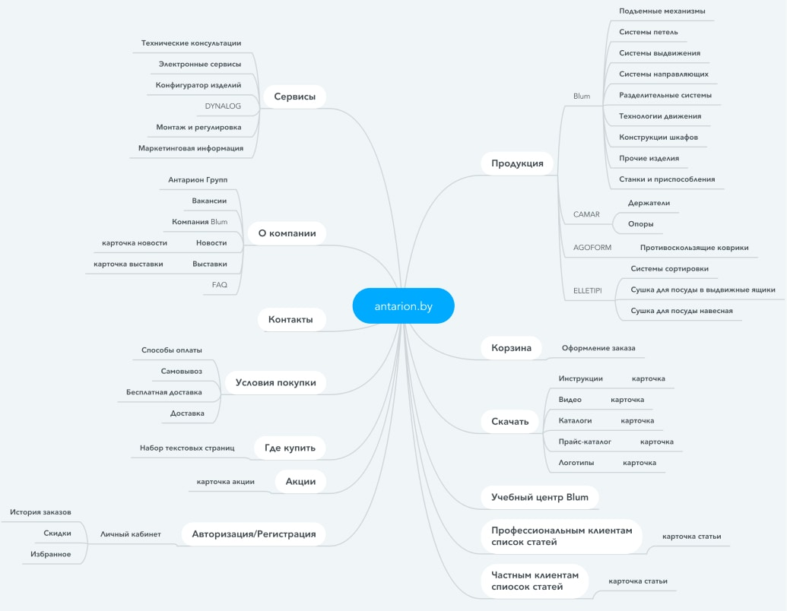
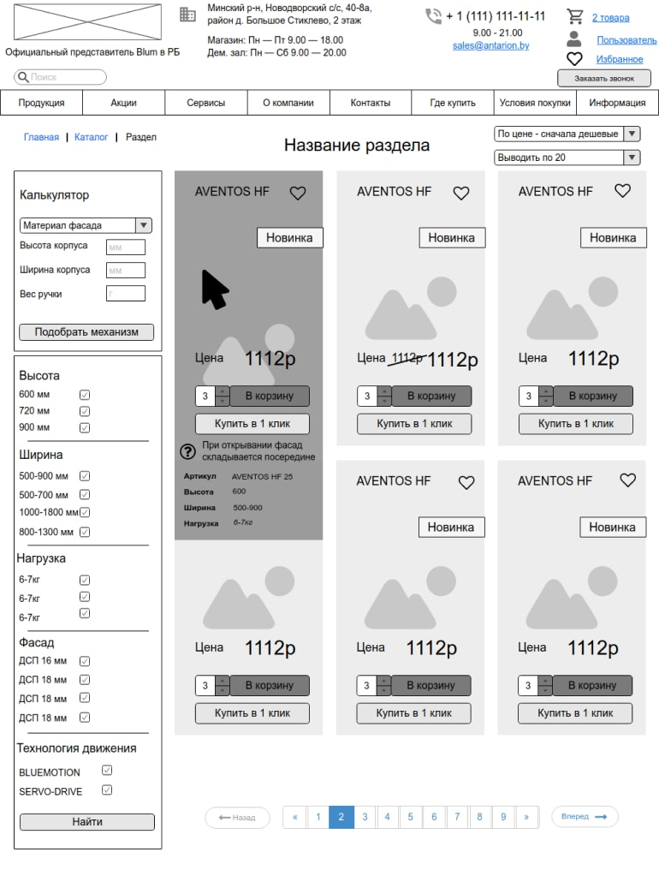
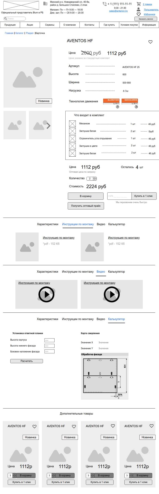
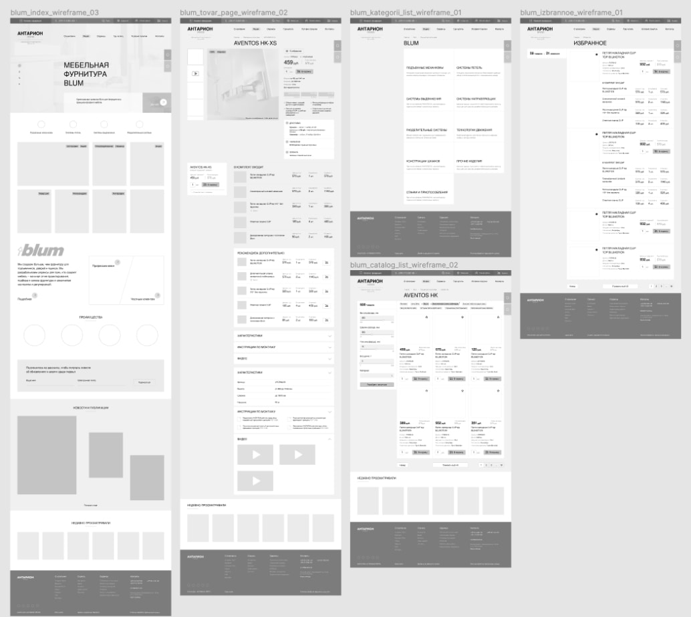
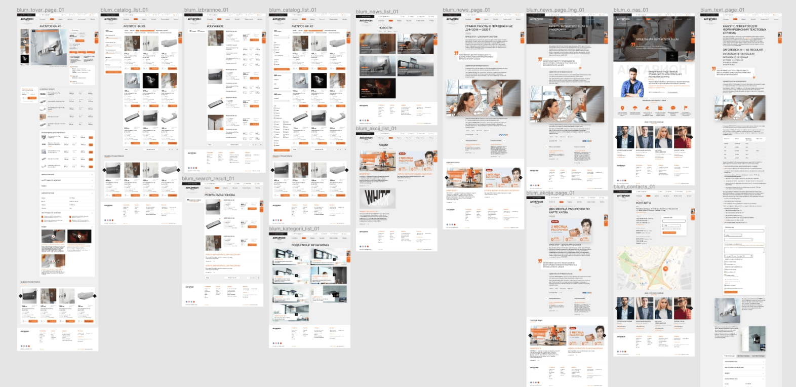
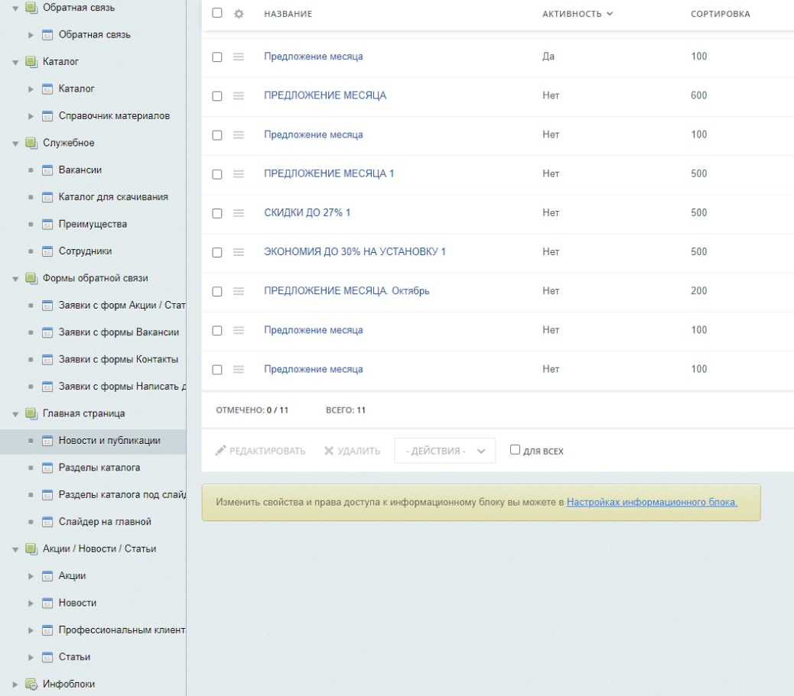
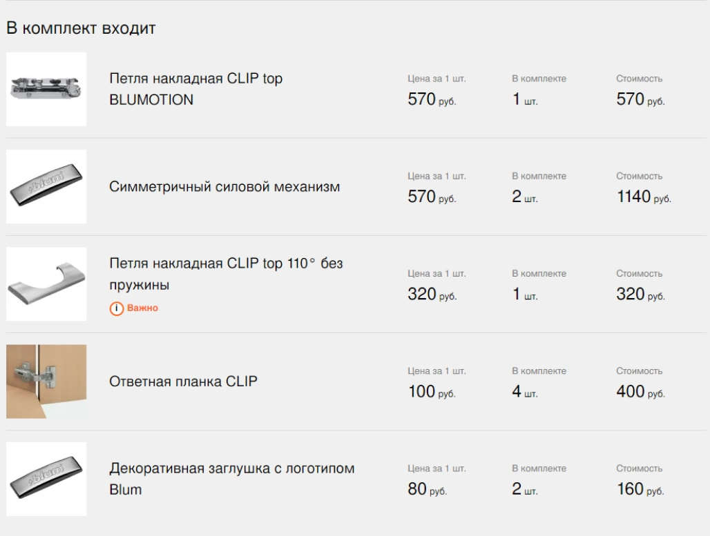
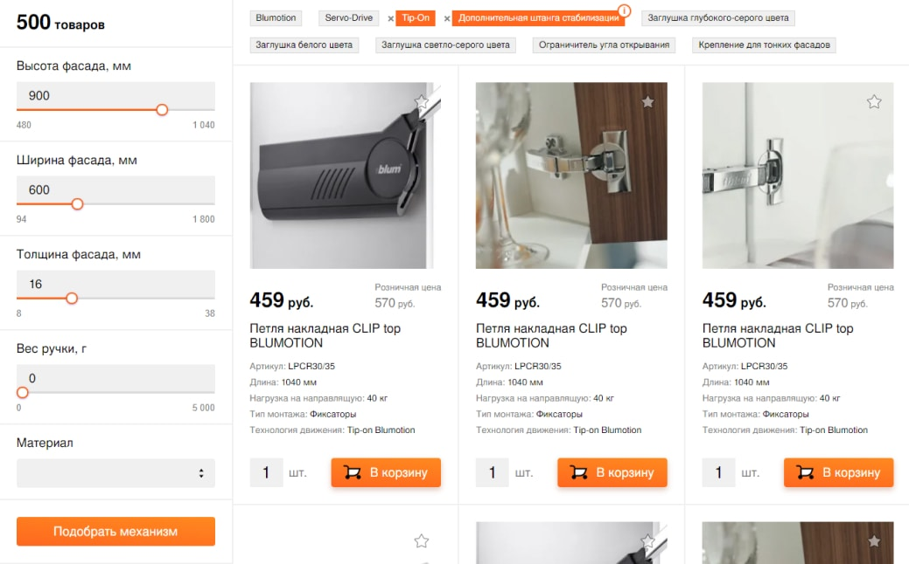
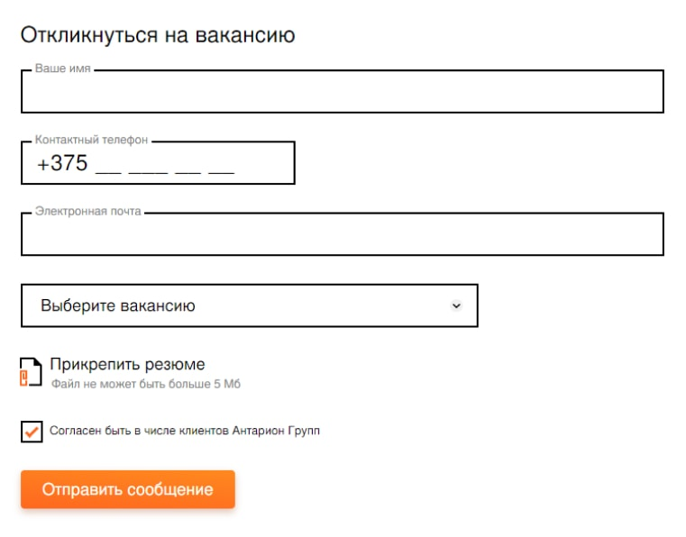

Официальный представитель производителя фурнитуры Blum в РБ. Лидер в сфере разработок, производства и продажи фурнитуры для кухонной и корпусной мебели высочайшего качества.
Задача проекта
Разработать интернет магазин фурнитуры официального представителя бренда Blum в республике Беларусь. Подготовить дизайн в соответствии с брендбуком бренда. Выполнить интеграцию с 1С для наполнения каталога товаров. Реализовать механизм работы с комплектами товаров.
Планируем дорожную карту
Проект объемный, поэтому работа велась по водопадной модели. Первичный план, без этапов согласования и правок, содержал 7 этапов. Примерная разбивка этапов была такой:
1-й этап
Проектирование архитектуры сайта
2-й этап
Разработка прототипов ключевых страниц сайта
3-й этап
Разработка дизайна ключевых страниц
4-й этап
HTML верстка макетов страниц
5-й этап
Программная реализация
6-й этап
Интеграция с 1С
7-й этап
Техническая поддержка и развитие проекта
Проектирование архитектуры сайта
На основании структуры старого сайта реализовали структуру нового, усовершенствовав и облегчив ее для пользователя. Проработали порядок формирования урлов, для страниц сайта.

Подготовили низкодетализированные прототипы ключевых страниц сайта, проработав основные механики взаимодействия пользователя с сайтом, упростив тем самым последующую работу дизайнеру.


Подготовили техническое задание в котором описали логику работы сайта, и порядок формирования урлов, логику хранения данных в Битрикс, поведение статических и динамических страниц, порядок интеграции с 1С, условия формирования комплектов товаров на основании выгрузки из 1С, базовые требования по SEO оптимизации и многое другое.
Особый акцент в техническом задании был сделан на возможности заказчиком самостоятельно, без привлечения подрядчиков, наполнять и редактировать контент.
Разработка прототипов ключевых страниц
Дизайнером были подготовлены высокодетализированные прототипы ключевых страниц сайта.

Разработка прототипов ключевых страниц
После согласования прототипов был подготовлен дизайн ключевых страниц

Программная реализация
Одна из основных задач программной реализации заключалась в реализации понятной структуры инфоблоков битрикс и свойств элементов, которая в перспективе позволит клиенту наполнять сайт самостоятельно без подключения разработчиков.

Обмен с 1С был реализован путем импорта xml файла с
номенклатурой, предоставленного головным офисаом Blum в связке с
импортом цен и остатков из 1С ООО «Антарион»
номенклатурой, предоставленного головным офисаом Blum в связке с
импортом цен и остатков из 1С ООО «Антарион»
Для работы с наборами и комплектами был написан собственный механизм, так как в данном случае механизм, предлагаемый битрикс, не до конца подходил под требования клиента

Фильтр каталога на сайте был реализован с возможностью подбора необходимой модели в зависимости от характеристик фасада. То есть был разработан калькулятор, который переводит базовые свойства допустимой нагрузки и мощности элемента в свойства, понятные для пользователя (размеры фасада и вес фасада). В результате фильтрации есть возможность выводить не только подошедшие по всем характеристикам товара, но и пограничные значения.

Для статических и динамических страниц реализовали конструктор форм, который позволяет гибко настраивать формы на сайте выводя в них необходимые поля

После выполнения работ по программированию мы выполнили первичное наполнение сайта, а так же перенесли актуальный контент со старого сайта. Перенесли сайт на боевой домен, подключили яндекс метрику и google analytics.
Техническая поддержка и развитие проекта
Сейчас сайт antarion.by мы ведем в рамках технической поддержки, выполняя различные задачи заказчика. Из последнего: подготовка новогодней анимации.
{kind=link}
Отзыв клиента

Команда проекта
Руководитель проекта
Юра Иов
Ведущий разработчик
Руслан Кадыров
Команда клиента
Денис Лобан
Дизайн, UX
Алексей Синькевич, Сергей Шишпор
Верстка
Павел Стасюкевич